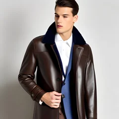

Design que atravessa gerações
Nossas estilistas desenham cada modelo inspiradas nos clássicos do rock e da estrada, com cortes que nunca saem de moda.
As jaquetas e botas Perfecto's são peças atemporais, com muito estilo.
Compre agoraNossas estilistas desenham cada modelo inspiradas nos clássicos do rock e da estrada, com cortes que nunca saem de moda.
Trabalhamos apenas com couro legítimo, escolhido à mão, que fica mais bonito e confortável com o uso.
Costura reforçada e solado resistente: botas pensadas para acompanhar você por muitos anos.

Tire dúvidas sobre tamanho, cuidados com o couro e trocas direto com a nossa equipe, sem robôs.
A Perfecto's nasceu da paixão por jaquetas de couro clássicas. Unimos técnicas artesanais com acabamento moderno para criar peças resistentes, confortáveis e com personalidade, que combinam com o dia a dia e com a estrada.
VER COLEÇÃO FALE CONOSCOCada jaqueta passa por inspeção de costura, zíperes e forro antes de sair da oficina. Usamos ferragens metálicas de alta durabilidade e forro respirável.
Com os cuidados certos, uma Perfecto's dura décadas. Por isso oferecemos orientação de manutenção do couro e garantia contra defeitos de fabricação.